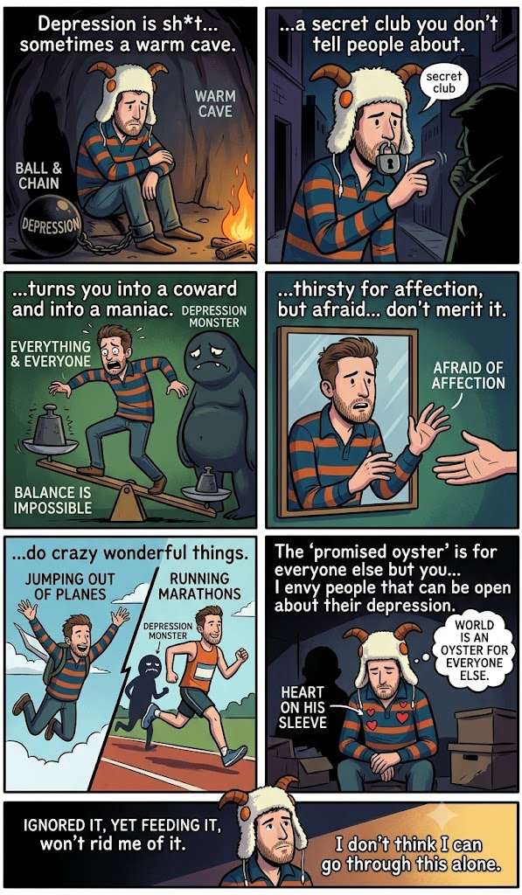

Depression is Shit
Originally written June 2012 • Uploaded to Facebook on Jun 20, 2012, 6:43 AM

Depression is shit. It is like having a heavy ball and chain clamped tightly around your ankle, yet sometimes it masquerades as a warm, protective cave you can willingly retreat into. It operates like a secret club you don’t dare tell people about, almost as if you were bound by an oath of absolute secrecy. It transforms you simultaneously into a coward and a maniac, placing everything and everyone on a volatile tipping scale that no one—least of all you—can successfully balance.
It leaves you profoundly thirsty for affection, but at the exact same moment, it makes you terrified of the very warmth you crave, simply because you never feel like you merit it. If you’re lucky, that manic static can occasionally drive you to do crazy, wonderful things like jumping out of airplanes or running marathons; at other times, it can turn you cold and violent. With depression, you never know what tomorrow will look like, or what minor, invisible tripwire will trigger a downward bout and return you to feeling completely miserable. It is a cozy, insulating cave when you want it to be, and a dark, terrifying cellar most of the time. We retreat into it because there we are not expected to be anything but sad, and climbing back out of that sadness can be an agonizingly difficult climb.
There are days when I simply cannot step out the door. Days when I want to sleep around the clock and accomplish absolutely nothing, and days when I want to scream and shout at everyone I pass that I have depression and they should love me back to normal. But it violently twists the way you perceive reality. It warps things until you believe you don't deserve anyone’s love or affection, convincing you that any warmth given is strictly conditional—offered only in exchange for something else. People will tell you that the medication helps, but then they conveniently forget to mention that the chemical buffer makes you feel dumb, slow, and generally less depressed only because it flat-out prevents you from reaching your natural emotional heights.
They also forget to mention how easily you can become addicted to sugar, to caffeine, to heavy melancholy, to old memories, and to dead relationships—all the toxic shit you wish you could purge from your system, but that continually feeds the depression monster. It feeds it until it grows so fat it never leaves the room. Depression tricks you into executing behaviors that trap you there. You find yourself constantly running a reel of your past failures, while your victories are never granted enough weight to balance out the defeats. You learn to take baby steps and rejoice in small, microscopic victories instead, attempting to let everything else slide away, but the immense energy required to overcome the heavy inertia doesn’t come easily.
It remains a secret club because you are terrified people will treat it like a communicable illness, worried they might catch it from you by proximity. Then you have to handle the people who automatically assume you're about to slit your wrists, throw yourself off a building, or act as an immediate danger to yourself. And while those dark thoughts undeniably cross the mind, most of the time the depression simply allows you to coast along, rejoicing in the dark comfort of more warm despair, over and over again, until like a chemical addiction, you cannot stop. I deeply envy people who can be entirely open about their mental health struggles. Those of us who carry it tend to keep it to ourselves, nodding slightly to each other on the streets like members of a quiet diaspora, knowing we can’t wait to be entirely alone again to enjoy the bitter sweetness.
Or we speak about it exclusively in code, rarely ever in positive or reassuring ways, simply because we don't actually know how to get out of the maze. If we did, we would have done so eons ago. It takes an immense amount of effort for a healthy person to accept defeat or absorb a loss, except when you are depressed; then, failure comes to you entirely naturally. The drive to succeed is slowly, systematically drained from your body, and you just sink and sink and sink. It becomes terrifyingly easy to accept a dark mental state because almost all global news is already grim, defeatist, and completely devoid of joy. The more you look toward the horizon, the more things you uncover to worry about. Accepting a total lack of color in our futures is a surefire way to feed the monster even more.
I genuinely envy the people who start their mornings with a massive grin on their faces, eager to see what the day will bring and ready to rip the heart out of the competition. Depression makes you feel like your own heart is the one up for the ripping. Keeping completely with the cliché, you wear your heart exposed on your sleeve. It is incredibly difficult to walk up to a friend and say, *"Hey man, I’ve got depression and I really need your help to get out of it."* Why? Because most people these days are simply too busy navigating their own problems to listen, let alone offer genuine reassurance to a friend who desperately needs it. If you thought carrying an STD came with a heavy social stigma, try carrying depression. That sucker never leaves your side, rain or shine.
So what do we do when we realize that depression is making a permanent home in our minds and bodies? At the start, we do very little, since it initially provides a seductive feeling of despair and nostalgia that is highly addictive. You convince yourself it’s just a brief phase, that you can battle it out on your own terms, and that you can quit the habit any day you choose. But in reality, most of us let it drift way too long, and before we know it, it becomes a deep, nasty stain we can't just wash out of the fabric. You become physically slower, your hopes grow cloudy, your natural passions are entirely washed away, and all you really hope for is a brief dose of external affection—one that will inevitably leave you shortly after, so the familiar chill of depression can keep you warm again. Talk about self-destruction.
You look at yourself in the mirror and demand to know what the hell you are doing. You feel as if you are actively wasting away, and that the promised oyster of a world is an oyster meant for everyone else but you. People throw cliché advice at you: find new friends, join a club, get a job, exercise regularly. And while all those things sound excellent on paper, executing them requires a monumental amount of effort—even for "normal" people.
I am not entirely certain what point I am trying to make by writing this down. I carry a constant, paralyzing fear of people feeling pity for me. After all, as we are all taught, boys don't cry. I want to shout at the world that I have depression, that I have it real bad, and that the primary way I escape it is by traveling—running away from myself and my past in a desperate bid to ensure the shadow won't follow suit. But after all is said and done, the depression always tracks my footprints down. It finds me in foreign cities with a vengeance, sticking to me with renewed strength every single time it catches up. I am not sure how I will beat it this time around, but I realize that as afraid as I am of vulnerability, affection, and true friendship, I don't think I can go through this dark corridor alone. Simply ignoring it while continuing to feed it will never rid me of it.